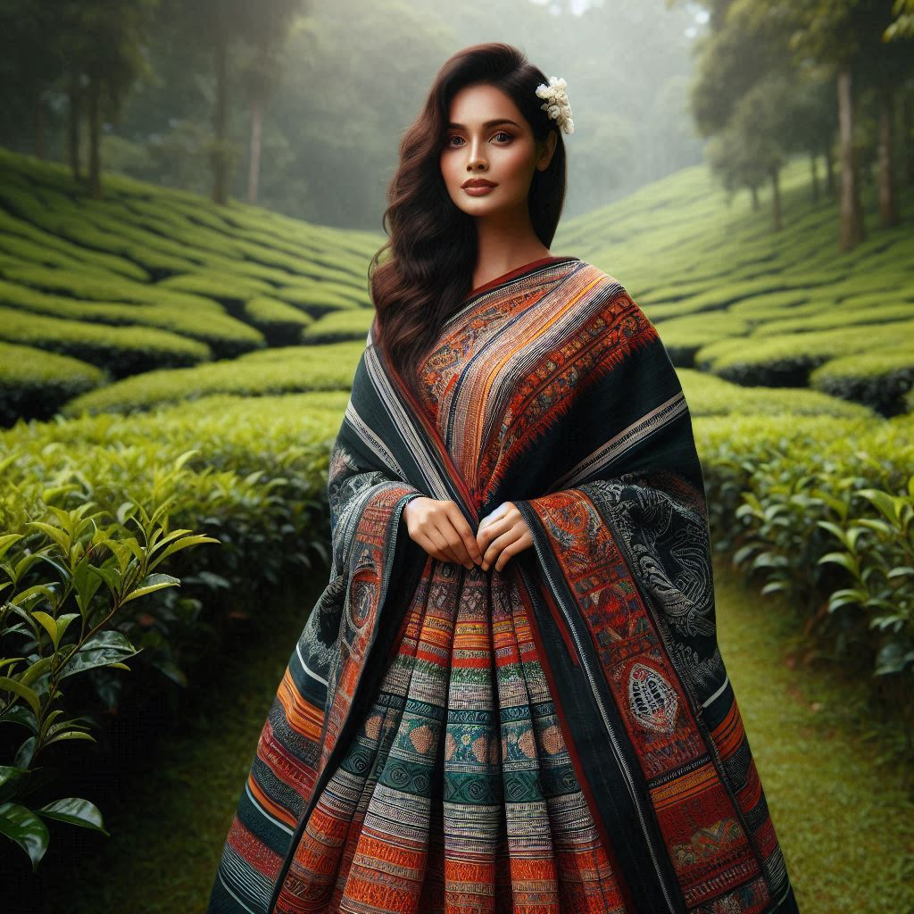
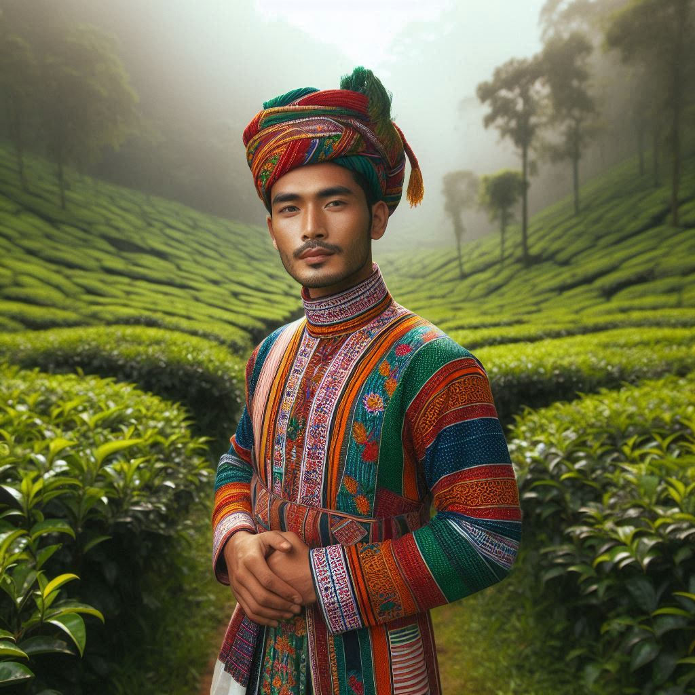

The traditional dress of Assam is deeply rooted in the state’s rich cultural heritage and reflects the
simplicity and elegance of Assamese life. The clothing style varies based on ethnicity, occasion, and region
but is largely characterized by the use of handwoven textiles, especially the famous Muga silk,
Pat silk, and Eri silk, all of which are indigenous to Assam.
1. Traditional Dress for Women:
The traditional attire for Assamese women is known as the
Mekhela Chador (or Mekhela Sador),
which is an elegant two-piece garment.
-
- Mekhela: The lower part of the dress, the mekhela, is a cylindrical piece of cloth worn
around the waist and tucked into place, resembling a sarong or long skirt. It is draped in
pleats, giving it a graceful appearance. The fabric can be made from Muga silk, cotton, or Pat
silk, depending on the occasion.
-
- Chador (Sador): The upper part, the chador, is a long, flowing cloth wrapped around the
upper body and tucked at the waist. It is often beautifully embroidered with traditional
Assamese motifs and designs. The chador is draped across the shoulder and worn in various styles
depending on the region or preference.
-
- Blouse: Women wear a fitted blouse underneath the chador, often in contrasting or matching
colors. The blouse complements the Mekhela Chador, adding to its elegance.
For festive occasions like
Bihu or weddings, the Mekhela Chador is often made from
Muga
silk or
Pat silk and is adorned with intricate golden or silver embroidery. The motifs
used in the designs are inspired by nature, such as flowers, birds, and traditional Assamese patterns
like the
Jaapi (traditional Assamese hat) or
Xorai (a ceremonial offering tray).
2. Traditional Dress for Men:
The traditional attire for Assamese men is simpler but equally elegant, often characterized by the
dhoti,
kurta, and the
gamosa.
- Dhoti: The dhoti is a long piece of cloth, usually white or cream, wrapped around the
waist and tied in place. It is paired with a kurta, a long, loose-fitting shirt. For
special occasions, men may wear silk dhotis with borders embroidered with traditional motifs.
-
- Kurta: The kurta is worn over the dhoti and can be made of cotton, silk, or other fine
fabrics. It is typically plain, but for festive or religious ceremonies, it may have intricate
designs or embroidery.
-
- Gamosa: The gamosa is a distinctive piece of cloth with a deep cultural significance in
Assam. It is a white handwoven towel with red borders and motifs and is often draped around the
neck or used ceremonially. The gamosa is a symbol of Assamese identity and pride and is commonly
gifted as a mark of respect or honor. It is also an important part of the Bihu dance costume for
men.
For festivals and ceremonies, men may also wear a silk shawl known as
Seleng Chador or
Eri
Chador over their kurta.
3. Festival and Wedding Attire:
- During festivals like Bihu, women often wear a special Mekhela Chador made from Muga or
Pat silk with elaborate designs, while men may wear a traditional dhoti-kurta along with a
colorful gamosa tied around the waist or head. Bihu dancers wear bright, vibrant Mekhela Chadors, often
in red and gold, reflecting the energy and joy of the festival.
- For weddings, Assamese brides wear a red or cream Mekhela Chador made of Muga silk, often
intricately embroidered with golden thread. The bridal attire is traditionally elegant and rich in
cultural significance. Grooms wear a dhoti-kurta paired with a chador draped over the
shoulder, usually made from silk or a finely woven cotton fabric.


4. Dress of Tribal Communities:
Assam is home to many tribal communities, each with its own distinctive style of clothing.
-
Bodo women traditionally wear the Dokhona, which is a wrap-around garment similar
to the Mekhela but with its own distinct patterns and designs. They pair it with a Jwmgra
(a scarf) and a blouse.
-
Mishing women wear the Ribi Gaseng, another variant of the wrap-around skirt, and
adorn themselves with traditional jewelry made from beads and shells.
-
Karbi men and women have their own unique attire, with women wearing Pecheng (a
wrap-around skirt) and a blouse, and men wearing a distinctive shawl or cloth over their kurta.
5. Jewelry and Accessories:
Assamese attire is often complemented by traditional jewelry, which is made from gold, silver, or beads.
-
Junbiri and Dholbiri are traditional Assamese ornaments worn by women, typically
shaped like the crescent moon.
-
Gamkharu is a type of wide bangle or bracelet worn by both men and women during special
occasions.
-
Thuria is a popular type of earring worn by Assamese women, characterized by its unique
design.
Conclusion:
The traditional dress of Assam is a beautiful reflection of the state’s cultural heritage, embodying
simplicity, elegance, and connection to nature. The clothing not only varies across different communities
but also adapts to different seasons, occasions, and festivals, making it a vibrant and essential part of
Assamese identity. Whether it is the finely woven Muga silk of the Mekhela Chador or the symbolic Gamosa,
Assamese attire speaks volumes about the region’s history, traditions, and craftsmanship.